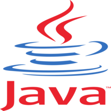

Python
Διάρκεια = 7 εβδομάδες | Κόστος = 150$

Η Python είναι διερμηνευόμενη (interpreted), γενικού σκοπού (general-purpose) και υψηλού επιπέδου, γλώσσα προγραμματισμού.
Ανήκει στις γλώσσες προστακτικού προγραμματισμού (Imperative programming) και υποστηρίζει τόσο το διαδικαστικό (procedural programming)
όσο και το αντικειμενοστραφές (object-oriented programming) προγραμματιστικό υπόδειγμα (programming paradigm). Είναι δυναμική γλώσσα προγραμματισμού
(dynamically typed) και υποστηρίζει συλλογή απορριμμάτων (garbage collection ή GC).Αυτό το μάθημα στοχεύει να διδάξει σε όλους τα βασικά του προγραμματισμού υπολογιστών
χρησιμοποιώντας Python. Καλύπτουμε τα βασικά για το πώς κάποιος κατασκευάζει ένα πρόγραμμα από μια σειρά απλών εντολών στην Python. Το μάθημα δεν έχει προαπαιτούμενα
και αποφεύγει όλα τα μαθηματικά εκτός από τα πιο απλά.
Τι θα μάθεις στο συγκεκριμένο μάθημα.
-
Χρήση μεταβλητών σε προγράμματα
-
Εκτέλεση υπό όρους
-
Επαναλαμβανόμενη εκτέλεση / βρόχος
-
Λειτουργίες και επαναχρησιμοποίηση κώδικα
Χρήσιμοι συνδέσμοι!
Java
Διάρκεια = 5 εβδομάδες | Κόστος = 250$

Η Java είναι μια αντικειμενοστρεφής γλώσσα προγραμματισμού που σχεδιάστηκε από την εταιρεία πληροφορικής Sun Microsystems.Στις αρχές του 1991, η Sun αναζητούσε το
κατάλληλο εργαλείο για να αποτελέσει την πλατφόρμα ανάπτυξης λογισμικού σε μικρο-συσκευές (έξυπνες οικιακές συσκευές έως πολύπλοκα συστήματα παραγωγής γραφικών).
Τα εργαλεία της εποχής ήταν γλώσσες όπως η C++ και η C. Μετά από διάφορους πειραματισμούς προέκυψε το συμπέρασμα ότι οι υπάρχουσες γλώσσες δεν μπορούσαν να καλύψουν
τις ανάγκες τους.Σε αυτό το εισαγωγικό μάθημα προγραμματισμού Java, θα εξοικειωθείτε με ισχυρές έννοιες όπως η λειτουργική αφαίρεση, το πρότυπο αντικειμενοστρεφούς
προγραμματισμού (OOP) και οι διεπαφές προγραμματισμού εφαρμογών (API). Θα δοθούν παραδείγματα και μελέτες περιπτώσεων, ώστε να μπορείτε να εφαρμόσετε απλά προγράμματα
μόνοι σας ή να συνεργαστείτε με συνομηλίκους.
Τι θα μάθεις στο συγκεκριμένο μάθημα.
-
Βασικές γνώσεις αλγορίθμων και προγραμματισμού Java
-
Αναπτύξτε προγράμματα με όρους και βρόχους
-
Σχεδιασμός και εφαρμογή αναδρομικών αλγορίθμων
-
Κατανόηση βασικών μηχανισμών του παραδείγματος OOP
Χρήσιμοι συνδέσμοι!
Εισαγωγή στην C++
Διάρκεια = 8 εβδομάδες | Κόστος = 400$

Η C++ (διαβάζεται: σι πλας πλας[1] [siː plʌs plʌs]) είναι μία γενικού σκοπού γλώσσα προγραμματισμού Η/Υ. Θεωρείται μέσου επιπέδου γλώσσα, καθώς περιλαμβάνει έναν συνδυασμό
χαρακτηριστικών από γλώσσες υψηλού και χαμηλού επιπέδου. Είναι μια μεταγλωττιζόμενη γλώσσα πολλαπλών παραδειγμάτων, με τύπους. Υποστηρίζει δομημένο, αντικειμενοστραφή και
γενικό προγραμματισμό.Μεταξύ των θεμάτων που καλύπτονται είναι η ανάπτυξη προγραμμάτων γραμμής εντολών που χρησιμοποιούν διαφορετικούς τύπους δεδομένων, εκφράσεις,
διακλάδωση αποφάσεων και επανάληψη για την επίλυση προβλημάτων.Αυτό είναι ένα μάθημα που παρέχει μια εισαγωγή στη γλώσσα προγραμματισμού C++. Οι μαθητές μαθαίνουν να προγραμματίζουν σε C++ μέσα από τις διαλέξεις και τα εργαστήρια. Το υλικό
προγραμματισμού C++ παρουσιάζεται σε διάστημα οκτώ εβδομάδων διαδραστικών διαλέξεων με εβδομαδιαία κουίζ για να αξιολογήσετε την κατανόησή σας για το υλικό.
Τι θα μάθεις στο συγκεκριμένο μάθημα.
-
Να εφαρμόζετε βασικές λειτουργίες εισόδου/εξόδου C++ με διαφορετικούς τύπους δεδομένων
-
Να σχεδιάζετε εκφράσεις C++ χρησιμοποιώντας σχεσιακούς τελεστές
-
Να σχεδιάζετε εκφράσεις C++ χρησιμοποιώντας λογικούς τελεστές
-
Σχεδίαση δηλώσεων επιλογής C++
Χρήσιμοι συνδέσμοι! (H C++ ΔΕΝ χρειάζεται εγκατάσταση)
Εισαγωγή στην C#
Διάρκεια = 6 εβδομάδες | Κόστος = 110$

Η C# είναι μια γλώσσα προγραμματισμού γενικής χρήσης, πολλαπλών παραδειγμάτων. Η C# περιλαμβάνει στατική πληκτρολόγηση, ισχυρή πληκτρολόγηση, λεξικά εύρους, επιτακτικούς,
δηλωτικούς, λειτουργικούς, γενικούς, αντικειμενοστρεφείς (βασισμένους σε κλάσεις) και προσανατολισμένους σε συνιστώσες κλάδους προγραμματισμού. Η C# είναι μια όμορφη γλώσσα
πολλαπλών πλατφορμών που μπορεί να χρησιμοποιηθεί για τη δημιουργία ποικιλίας εφαρμογών. Με το C#, μπορείτε να δημιουργήσετε εφαρμογές για κινητά (για Windows, Android και iOS), παιχνίδια, ιστότοπους και εφαρμογές για υπολογιστές.Μόλις κατακτήσετε τις βασικές αρχές της C# και τον προγραμματισμό με .NET
Framework, θα έχετε πολλές επιλογές μπροστά σας. Μπορείτε να επιλέξετε να δημιουργήσετε εφαρμογές για κινητά αν προτιμάτε ή μπορείτε να αλλάξετε δουλειά και να εργαστείτε
ως προγραμματιστής ιστού. Εφόσον γνωρίζετε καλά τα βασικά στοιχεία, η μετάβαση σε διαφορετικές στοίβες τεχνολογίας είναι αρκετά εύκολη.
Τι θα μάθεις στο συγκεκριμένο μάθημα.
-
Μάθετε τις βασικές αρχές της C# και του .NET Framework
-
Ελέγξτε τη ροή των προγραμμάτων χρησιμοποιώντας εντολές υπό όρους
-
Θα μάθετε τη διαφορά μεταξύ τύπων τιμών και τύπων αναφοράς
-
Να κάνετε debugging C# εφαρμογές αποτελεσματικά
Χρήσιμοι συνδέσμοι! (H C# ΔΕΝ χρειάζεται εγκατάσταση)
Επιστήμη Υπολογιστών για Ανάπτυξη Παιχνιδιών
Διάρκεια = 6 μήνες | Κόστος = 500$

Αυτά τα μαθήματα θα σας οδηγήσουν στο πιο δημοφιλές προπτυχιακό μάθημα στο Χάρβαρντ, CS50, μια Εισαγωγή στην Επιστήμη των Υπολογιστών. Το πρώτο μάθημα θα σας εισάγει σε
κοινές γλώσσες προγραμματισμού, παρέχοντας μια ισχυρή βάση για να χτίσετε τις απαραίτητες δεξιότητες για να σχεδιάσετε και να αναπτύξετε το δικό σας παιχνίδι. Το δεύτερο
μάθημα θα σας εισάγει στις βασικές αρχές του ίδιου του προγραμματισμού παιχνιδιών.Θα εξερευνήσετε τη σχεδίαση κλασικών παιχνιδιών — και νεότερων τίτλων όπως το Angry Birds
και το Portal — σε μια προσπάθεια να κατανοήσετε πώς φτιάχνονται τα βιντεοπαιχνίδια. Μέσα από διαλέξεις και πρακτικά έργα, θα εξερευνήσετε τις αρχές των 2D και 3D γραφικών
υπολογιστή, των κινούμενων σχεδίων, του ήχου και της ανίχνευσης σύγκρουσης. Θα μάθετε πώς να χρησιμοποιείτε πλαίσια όπως το Unity και το LÖVE 2D, καθώς και γλώσσες όπως η
Lua και η C#.
Τι θα μάθεις στο συγκεκριμένο μάθημα.
-
Μια ευρεία και ισχυρή κατανόηση της επιστήμης των υπολογιστών, του προγραμματισμού και της ανάπτυξης λογισμικού
-
Έννοιες όπως αφαίρεση, αλγόριθμοι, δομές δεδομένων, ενθυλάκωση, διαχείριση πόρων, ασφάλεια, μηχανική λογισμικού και ανάπτυξη ιστού
-
Εξοικείωση σε πολλές γλώσσες, όπως C, Python, JavaScript, SQL, CSS και HTML
-
Τα βασικά στοιχεία του σχεδιασμού και της ανάπτυξης παιχνιδιών
Χρήσιμοι συνδέσμοι!